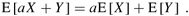
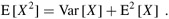

|
|
< Day Day Up > |
|
A (discrete) random variable X is a function from a finite or countably infinite sample space S to the real numbers. It associates a real number with each possible outcome of an experiment, which allows us to work with the probability distribution induced on the resulting set of numbers. Random variables can also be defined for uncountably infinite sample spaces, but they raise technical issues that are unnecessary to address for our purposes. Henceforth, we shall assume that random variables are discrete.
For a random variable X and a real number x, we define the event X = x to be {s ∈ S : X(s) = x}; thus,
The function
f (x) = Pr{X = x}
is the probability density function of the random variable X. From the probability axioms, Pr{X = x} ≥ 0 andΣx Pr{X = x} = 1.
As an example, consider the experiment of rolling a pair of ordinary, 6-sideddice. There are 36 possible elementary events in the sample space. We assume that the probability distribution is uniform, so that each elementary event s ∈ S is equally likely: Pr{s} = 1/36. Define the random variable X to be the maximum of the two values showing on the dice. We have Pr{X = 3} = 5/36, since X assigns a value of 3 to 5 of the 36 possible elementary events, namely, (1, 3), (2, 3), (3, 3), (3, 2), and (3, 1).
It is common for several random variables to be defined on the same sample space. If X and Y are random variables, the function
f (x, y) = Pr{X = x and Y = y}
is the joint probability density function of X and Y. For a fixed value y,
and similarly, for a fixed value x,
Using the definition (C.14) of conditional probability, we have
We define two random variables X and Y to be independent if for all x and y, the events X = x and Y = y are independent or, equivalently, if for all x and y, we have Pr{X = x and Y = y} = Pr{X = x} Pr{Y = y}.
Given a set of random variables defined over the same sample space, one can define new random variables as sums, products, or other functions of the original variables.
The simplest and most useful summary of the distribution of a random variable is the "average" of the values it takes on. The expected value (or, synonymously, expectation or mean) of a discrete random variable X is
which is well defined if the sum is finite or converges absolutely. Sometimes the expectation of X is denoted by μX or, when the random variable is apparent from context, simply by μ.
Consider a game in which you flip two fair coins. You earn $3 for each head but lose $2 for each tail. The expected value of the random variable X representing your earnings is
|
E[X] |
= |
6 · Pr{2 H's} + 1 · Pr{1 H, 1 T} - 4 · Pr{2 T's} |
|
= |
6(1/4) + 1(1/2) - 4(1/4) |
|
|
= |
1. |
The expectation of the sum of two random variables is the sum of their expectations, that is,
whenever E[X] and E[Y] are defined. We call this property linearity of expectation, and it holds even if X and Y are not independent. It also extends to finite and absolutely convergent summations of expectations. Linearity of expectation is the key property that enables us to perform probabilistic analyses by using indicator random variables (see Section 5.2).
If X is any random variable, any function g(x) defines a new random variable g(X). If the expectation of g(X) is defined, then
Letting g(x) = ax, we have for any constant a,
Consequently, expectations are linear: for any two random variables X and Y and any constant a,
| (C.22) |  |
When two random variables X and Y are independent and each has a defined expectation,
In general, when n random variables X1, X2,..., Xn are mutually independent,
When a random variable X takes on values from the set of natural numbers N = {0, 1, 2,...}, there is a nice formula for its expectation:
since each term Pr{X ≥ i} is added in i times and subtracted out i -1 times (except Pr{X ≥ 0}, which is added in 0 times and not subtracted out at all).
When we apply a convex function f(x) to a random variable X, Jensen's inequality gives us
provided that the expectations exist and are finite. (A function f(x) is convex if for all x and y and for all 0 ≤ λ ≤ 1, we have f(λx+(1-λ)y) ≤ λf(x)+(1-λ)f(y).)
The expected value of a random variable does not tell us how "spread out" the variable's values are. For example, if we have random variables X and Y for which Pr{X = 1/4} = Pr{X = 3/4} = 1/2 and Pr{Y = 0} = Pr{Y = 1} = 1/2, then both E[X] and E[Y ] are 1/2, yet the actual values taken on by Y are farther from the mean than the actual values taken on by X.
The notion of variance mathematically expresses how far from the mean a random variable's values are likely to be. The variance of a random variable X with mean E[X] is
The justification for the equalities E[E2[X]] = E2[X] and E[XE[X]] = E2[X] is that E[X] is not a random variable but simply a real number, which means that equation (C.21) applies (with a = E[X]). Equation (C.26) can be rewritten to obtain an expression for the expectation of the square of a random variable:
| (C.27) |  |
The variance of a random variable X and the variance of a X are related (see Exercise C.3-10):
Var [a X] = a2Var[X].
When X and Y are independent random variables,
Var[X + Y ] = Var [X] + Var [Y].
In general, if n random variables X1, X2,..., Xn are pairwise independent, then
The standard deviation of a random variable X is the positive square root of the variance of X. The standard deviation of a random variable X is sometimes denoted σX or simply σ when the random variable X is understood from context. With this notation, the variance of X is denoted σ2.
Two ordinary, 6-sided dice are rolled. What is the expectation of the sum of the two values showing? What is the expectation of the maximum of the two values showing?
An array A[1 ‥ n] contains n distinct numbers that are randomly ordered, with each permutation of the n numbers being equally likely. What is the expectation of the index of the maximum element in the array? What is the expectation of the index of the minimum element in the array?
A carnival game consists of three dice in a cage. A player can bet a dollar on any of the numbers 1 through 6. The cage is shaken, and the payoff is as follows. If the player's number doesn't appear on any of the dice, he loses his dollar. Otherwise, if his number appears on exactly k of the three dice, for k = 1, 2, 3, he keeps his dollar and wins k more dollars. What is his expected gain from playing the carnival game once?
Argue that if X and Y are nonnegative random variables, then
E [max(X, Y)] ≤ E [X] + E [Y ].
Let X and Y be independent random variables. Prove that f(X) and g(Y) are independent for any choice of functions f and g.
Let S be a sample space, and let X and X' be random variables such that X(s) ≥ X'(s) for all s ∈ S. Prove that for any real constant t,
Pr {X ≥ t} ≥ Pr {X' ≥ t}.
Which is larger: the expectation of the square of a random variable, or the square of its expectation?
|
|
< Day Day Up > |
|